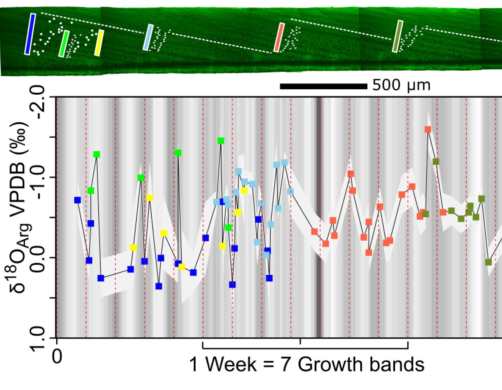

Using geochemistry to understand ecology
As the last living externally shelled cephalopod, the Nautilus has been a model organism for understanding the ecology and life history of ammonites and extinct nautiloids. Slow reproductive rates and fishing pressures from the shell trade have recently prompted CITES lisiting for all Nautilus species. The genus is a scavenger in steep forereef environments, where it swims around slowly smelling for food. Radiotracking studies have shown Nautilus to be active swimmers that cross hundreds of meteres a day across a large range of temperatures. Because of its status as a model organism and the swimming behavior, I hypothesized that this behavior could be recorded in the δ18O of the shell. I used the WiscSIMS Cameca IMS-1280 to measure δ18O values of shell grown in less than 24 hours and found variability indicative of depth migration behavior. The paper communicating these results is here . These findings are a modern test for the preservation of sub-daily behavior in the mineralized parts of cephalopods in deep time.
Were ammonite eggs and hatchlings planktic?

Ammonoids were a major component of marine ecosystems from their first appearance in the Devonian until their ultimate extinction in the early Paleogene. Unlike living Nautilus that has large benthic eggs, ammonoids likely had many small eggs. Because modern cephalopods that have small eggs generally have planktic hatchlings, it has been hypothesized that ammonites had at least a short window of time with a planktic mode of life. To test this, I used δ18O measured from the thin walls of hatchling ammonites collected from rocks of the Cretaceous Western Interior Seaway and compared these data to similar data from obligate benthic bivalves to constrain vertical position in the water column due to the temperature gradient. I found that pre-hatching values are more similar to bivalves, suggesting a benthic egg laying and that values reflect warmer or fresher water indicating shallower habitat after hatching. Variability between five different individuals in the same concretion suggests seasonally protracted spawning. To read more about this, take a look at the paper.
Did ammonites swim?
Some filler text on ammonite swimming - owl creek